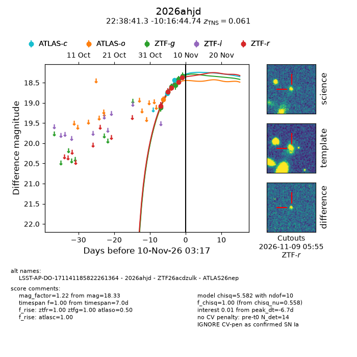
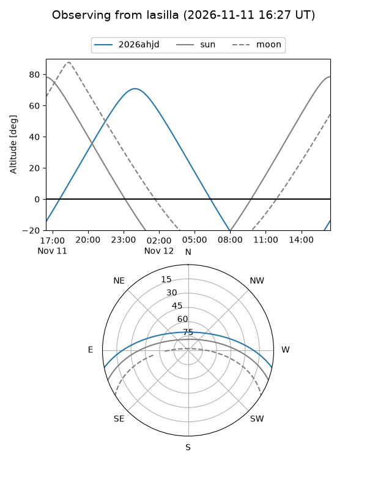
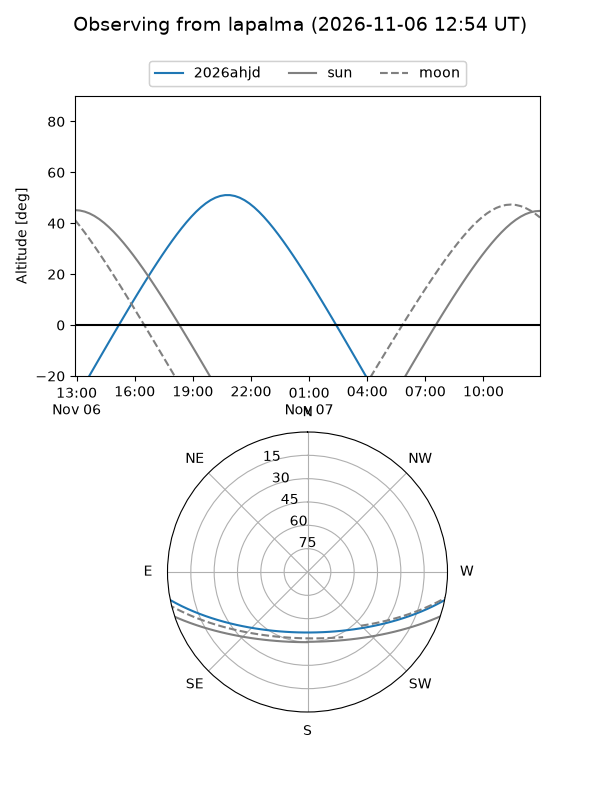
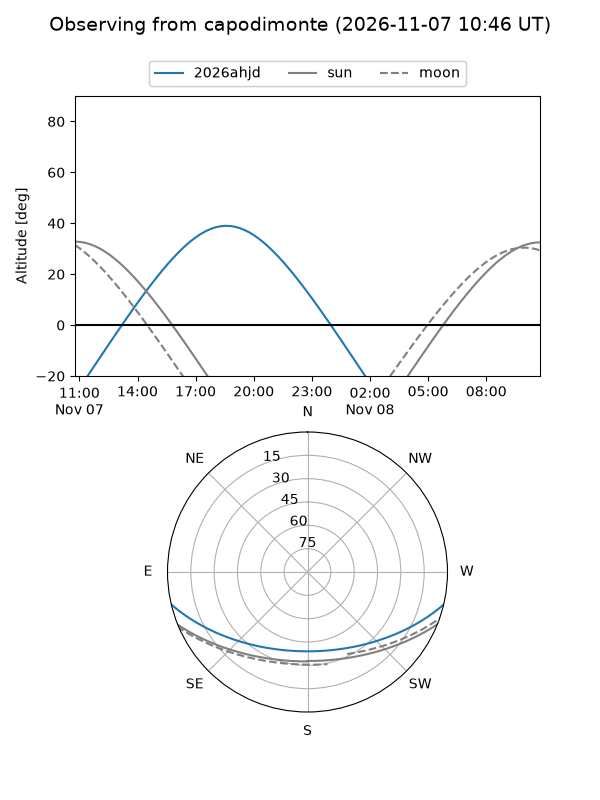
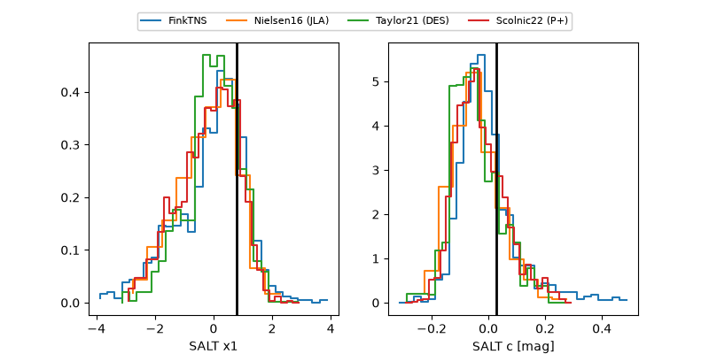

2026ahjd
Target 2026ahjd at 2026-11-10 03:19
Aliases and brokers:
FINK-ZTF: ztf.fink-portal.org/ZTF26acdzulk
Lasair-ZTF: lasair-ztf.lsst.ac.uk/objects/ZTF26acdzulk
ALeRCE-ZTF: alerce.online/object/ZTF26acdzulk
YSE-PZ: ziggy.ucolick.org/yse/transient_detail/2026ahjd
TNS name: wis-tns.org/object/2026ahjd
Direct TNS query: direct search
alt names
ZTF26acdzulk (ztf,fink_ztf)
2026ahjd (tns,yse)
LSST-AP-DO-171141185822261364 (iau_lsst)
ATLAS26nep (atlas)
Coordinates:
equatorial (ra, dec) = 339.6722,-10.27909
equatorial (HMS+DMS) = 22:38:41.33,-10:16:44.74
galactic (l, b) = (54.8463,-54.51147)
Flags:
TNS type: SN Ia
TNS redshift: 0.0610
peak dt: -6.7
Photometry:
last atlasc=18.43, atlaso=18.91, ztfg=18.33, ztfr=18.37
2 atlasc, 1 atlaso, 6 ztfg, 5 ztfr detections
Lightcurve

Visibility



Additional plots
